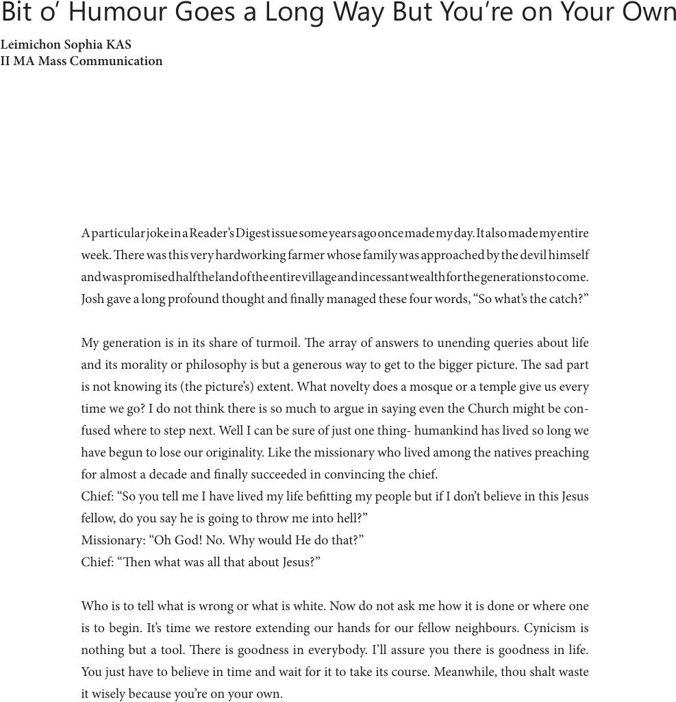

A particular joke in a Reader’s Digest issue some years ago once made my day. It also made my entire
week. ere was this very hardworking farmer whose family was approached by the devil himself
and was promised half the land of the entire village and incessant wealth for the generations to come.
Josh gave a long profound thought and nally managed these four words, “So what’s the catch?”
My generation is in its share of turmoil. e array of answers to unending queries about life
and its morality or philosophy is but a generous way to get to the bigger picture. e sad part
is not knowing its (the picture’s) extent. What novelty does a mosque or a temple give us every
time we go? I do not think there is so much to argue in saying even the Church might be con-
fused where to step next. Well I can be sure of just one thing- humankind has lived so long we
have begun to lose our originality. Like the missionary who lived among the natives preaching
for almost a decade and nally succeeded in convincing the chief.
Chief: “So you tell me I have lived my life betting my people but if I don’t believe in this Jesus
fellow, do you say he is going to throw me into hell?”
Missionary: “Oh God! No. Why would He do that?”
Chief: “en what was all that about Jesus?”
Who is to tell what is wrong or what is white. Now do not ask me how it is done or where one
is to begin. It’s time we restore extending our hands for our fellow neighbours. Cynicism is
nothing but a tool. ere is goodness in everybody. I’ll assure you there is goodness in life.
You just have to believe in time and wait for it to take its course. Meanwhile, thou shalt waste
it wisely because you’re on your own.
Bit o’ Humour Goes a Long Way But You’re on Your Own
Leimichon Sophia KAS
II MA Mass Communication